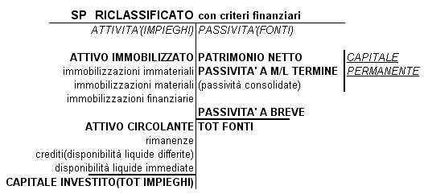
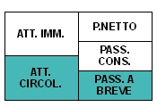
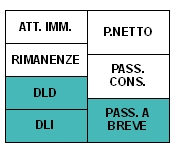
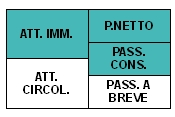
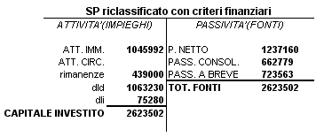
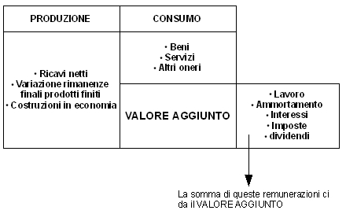
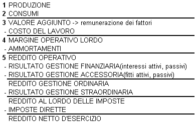

Torna alla pagina di Economia ed Organizzazione Aziendale
:: Economia ed Organizzazione Aziendale ::
Lezione 30/05/2008
Chi fa analisi di bilancio?
- Soggetti Interni
- Perché?: per individuare i punti di forza e i punti di debolezza dell'azienda(SWOT) ricondotti ad aree di gestione
- Soggetti Esterni
- finanziatori(banche)
- investitori(acquisto azioni)
SP Riclassificato

I Margini dello Stato Patrimoniale
Si utilizzano per verificare se la struttura patrimoniale e finanziaria è in equilibrio.
I principi che devono essere soddisfatti affinché ci sia equilibrio sono:
- ATTIVO CIRCOLANTE > PASSIVITA' A BREVE
- CAPITALE PERMANENTE > ATTIVO IMMOBILIZZATO(Le risorse finanziarie necessarie per acquisire le immobilizzazioni si reperiscono in fonti disponibili per periodi superiori ai 12 mesi)
I margini analizzati sono:
- CCN(CAPITALE CIRCOLANTE NETTO)
- MARGINE DI TESORERIA
- MARGINE DI STRUTTURA
1. Capitale Circolante Netto (CCN)
= ATTIVO CIRCOLANTE - PASSIVITA' A BREVE
può essere:
- >0 → le risorse disponibili nel breve periodo sono adeguate per fare fronte agli impegni di breve periodo
- <0 → per fare fronte agli impegni di breve periodo di ricorre alle immobilizzazioni

2. Margine di Tesoreria
E' un indice di tesoreria, trascuriamo le merci quindi rispetto al CCN manca il magazzino
= DLI[disponibilità liquide immediate](cassa; banca) + DLD[disponibilità liquide differite](crediti) - PASSIVITA' A BREVE

Margine di Tesoreria > 0
3. Margine di Struttura
E' complementare al CCN e può essere di due tipi:
- PRIMARIO = P.NETTO - ATTIVO IMMOBILIZZATO
la struttura patrimoniale è equilibrata se MdS>0 poiché nell'evidenza empirica(PN << IMMOBILIZ.) allora si ricorre:
- SECONDARIO = CAPITALE PERMANENTE - ATTIVO IMMOBILIZZATO

se Mds<0 la struttura è squilibrata, c'è squilibrio finanziario ed il Margine di Tesoreria<0
Ex1

RICHIESTA:
La struttura patrimoniale finanziaria è in equilibrio?
SOLUZIONE:
- CCN = ATT.CIRCOLANTE - PASS. A BREVE = 1577510 - 723563 = 853947
- MARGINE DI TESORERIA = DLI + DLD - PASS. A BREVE= 414947 > 0
- MARGINE DI STRUTTURA =
- PRIMARIO = P.NETTO - ATTIVO IMMOBILIZZATO = 191168
- SECONDARIO = CAPITALE PERMANENTE - ATTIVO IMMOBILIZZATO = 853947
Riclassificazione del Conto Economico
Lo schema del Conto Economico del Cod.Civ. consente di valutare la capacità di produrre reddito solo in modo parziale:
- non consente di cogliere i valori della gestione caratteristica nettamente distinti dalla gestione non caratteristica
Es:
A) Valore della Produzione
1. Ricavi
.
.
.
5. Altri Ricavi
- i valori economici sono classificati:
per NATURA(motivo per cui si sono sostenuti i costi. In base alla causa di origine)
e NON PER DESTINAZIONE, secondo le funzioni aziendali:
- funzione Amministrativa
- funzione Commerciale
- funzione Produzione
In genere vengono utilizzati due schemi di riclassificazione:
- Conto Economico a Valore Aggiunto
- Conto Economico a Costo del Venduto
Conto Corrente a Valore Aggiunto
Gli aspetti da tenere in considerazione sono:
1. PRODUZIONE
- ricavi netti
- variazione rimanenze finali prodotti finiti
- costruzioni in economia
2. CONSUMI
- acquisto materie prime
- servizi
- altri oneri di gestione
------------------
VALORE AGGIUNTO(1-2)3.
REMUNERAZIONE DEI FATTORI PRODUTTIVI
- dipendenti(salari e stipendi)
- finanziatori(oneri finanziari)
- stato(imposte)
- azionisti(dividendi)
- impresa nostra(utili non distribuiti)
PRODUZIONE
- vendita → Ricavi
- immagazzinata → R.F.
- immobilizzata → Costruzioni in Economia
⇒ questi valori ci danno il valore della Produzione
CONSUMO

Riclassificazione Conto Economico a Valore Aggiunto

Indici di Redditività
- ROI(return on investement)redditività del k-investito
= REDDITO OPERATIVO / CAPITALE INVESTITO
- ROE(return on equity)
= REDDITO NETTO / CAP. PROPRIO
capitale proprio = patrimonio netto
Redditività = FLUSSO(ricchezza nuova prodotta in un anno)/STOCK(capitale)
Nota: ROI e ROE sono tassi d'interesse
Torna alla pagina di Economia ed Organizzazione Aziendale